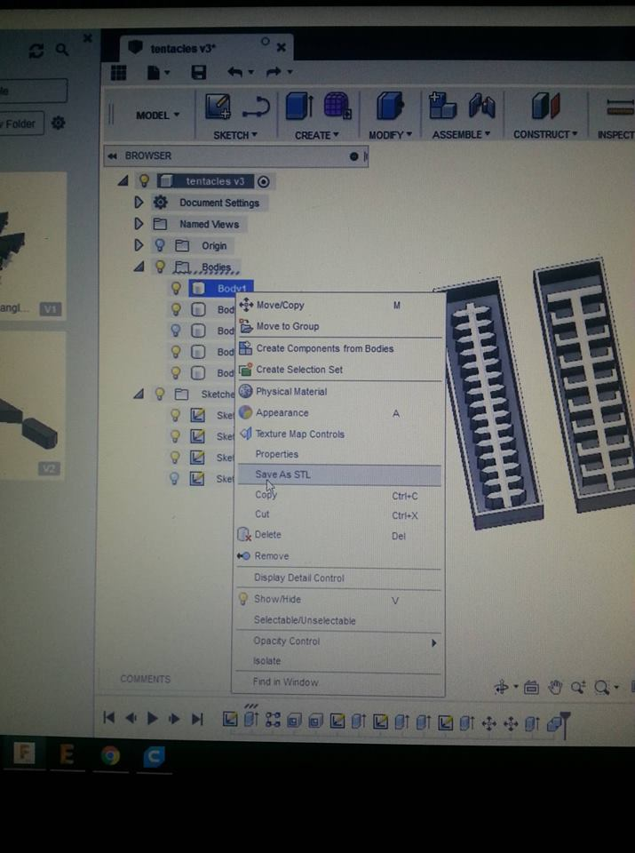

The following photos are supported with a short explanation of the whole process of making 3d mold/Inflatable.
You have to make your mold shape on Fusion 360 or any other 3d modeling Software.

After you have created each component you need to save each body as STL file.
Right click on each body and Save as STL.
We save the files as STL because this is the format Cura reads.
Cura is the program for the 3d printer. You should first choose the
3d printer you have. Then you can place the STL files. You can put
as many as you can gather on the plate, of course it is good to
leave a good size frame around them, for the ease of the pattern.
Another step you need to make sure is done is to place the flat on the plate.
This is more or less, how the setting look like for 0.8 nozzle.
Of course, this is this is not as precise as it can go.
3d prints can be very smooth, filled or empty.
If you choose Layer View you can see layer by layer how the printer would proceed.
Good Luck and Have Fun!
The molds are printed. Now we have to proceed with the Ecoflex 00-30
FabLab Kamp-Lintfort, Ms. Adriana Cabrera, Soft Prototyping
‹ ›